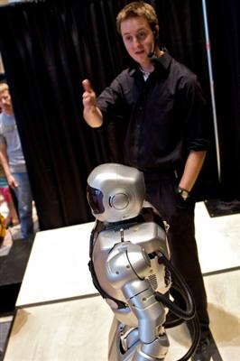

Daniel M. Lofaro is a Ph.D. Candidate in the Electrical and Computer Engineering Department at Drexel University and works at the Drexel Autonomous Systems Lab (DASL) at under Dr. Paul Oh and is currently researching Complex Control Systems and Robotics. Daniel's dissertation topic is end-effector velocity control for bipedal robots, also known as throwing.
- NSF-EAPSI Fellow, 2008
- Drexel University, BS/MS 2008
"A Low-cost Low-maintanence Platform for Hands-on Experiments In Control Systems Education"HTML article